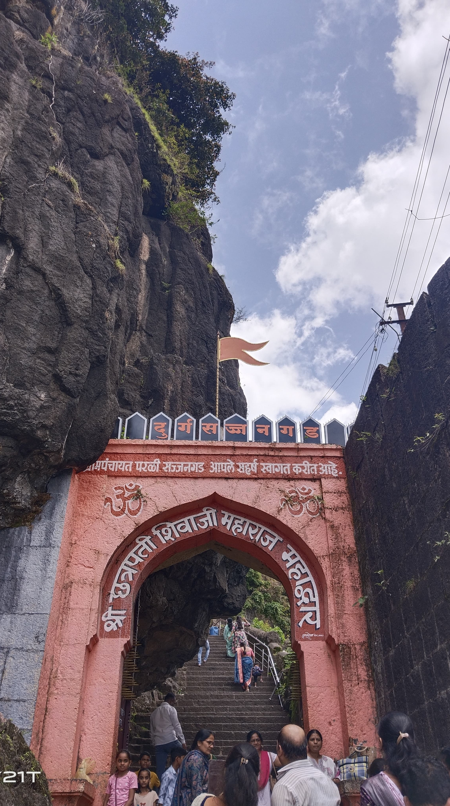
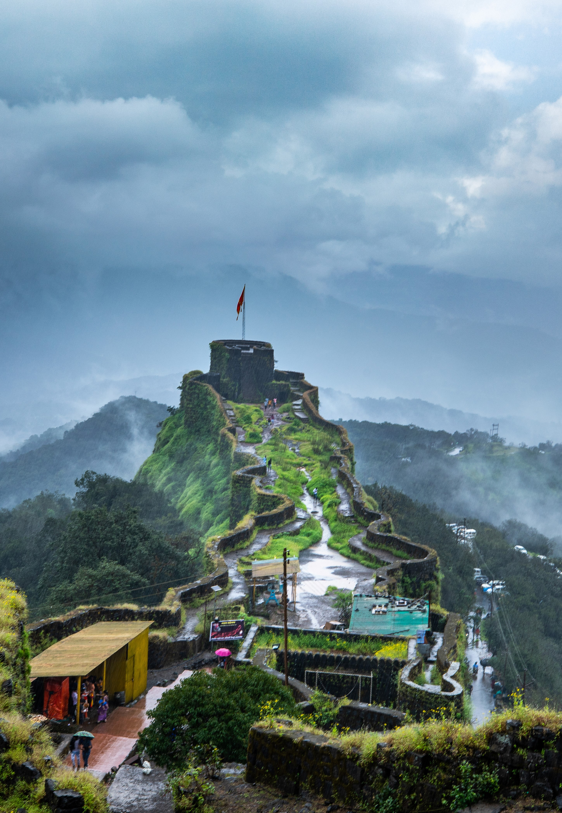
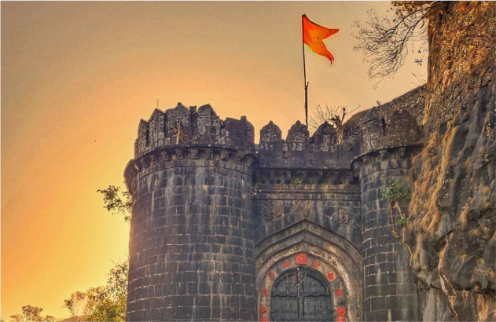
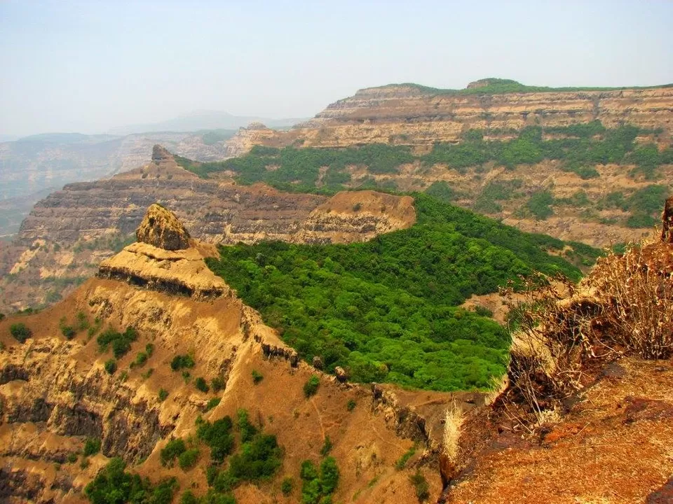
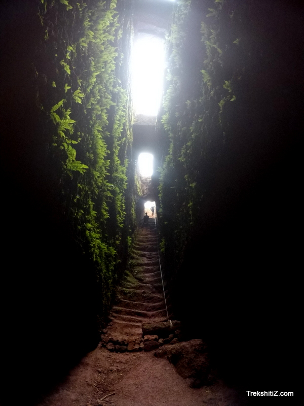
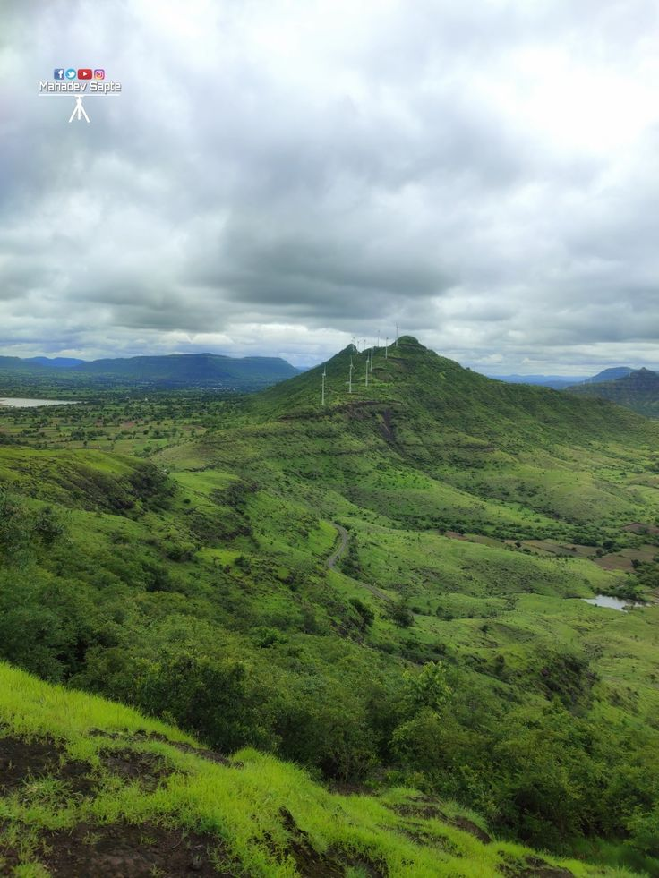

Situated 16 km from Satara, Sajjangad Fort is an important pilgrimage site,
best known as the final resting place of Sant Ramdas Swami, the spiritual guru of Shivaji Maharaj.
The fort, surrounded by the scenic Western Ghats, offers visitors a glimpse into Maharashtra’s historical and religious past.
Attraction
beautiful view of the Sahyadri ranges and nearby village.
known
for its peaceful,spiritual environment.
Best time to visit:
Octomber to march and
mansoon season for greenery

Pratapgad Fort, located near Mahabaleshwar, is a historic hill fort that stands at an elevation of 3,500 feet.
Known for its connection with Chhatrapati Shivaji Maharaj, this fort witnessed the famous battle against Afzal Khan.
The fort houses a statue of Shivaji Maharaj, a Bhavani Temple, and a cultural library.
Best time to visit:
October to march(cool and pleasant)
mansoon season for lush greenery(with care)

Ajinkyatara fort is an important historical fort located in satara city,it stands on small
in the Sahyadri mountain range and offers a panoramic view of satara city and surrounding areas.
The fort is believed to have been built around 16th century.
Attraction
beautiful sunset view of satara city.
Good spot for photography and nature lovers.
Best time to visit:October to February and mansoon season.

Vasota is a one of the most advanturous and forest-covered forts in Maharashtra.
The fort is believed to be built during the Shilahara dynasty period.it was captured by
Chhatrapati Shivaji Maharaj in 1655.
Treak Route: 1.Boat Route:Boat from Bamnoli village to Vasota base
2.Jungle treak Route:From Koynanagar
Best Season:October to February
How to reach:Satara->Bamnoli:~60 km
Forest Permission is compulsory

Kamalgad fort is famous for its high cliffs,natural defenses,and paanoramic view of the
Krishna valley and Dhom backwaters.This fort is is believed to be built during the medival
period.
How to reach:
From satara:~30km
From Wai:~15km
From Pune:~90km
You can reach wai by road,then travel to the base village and start the treak.

Chandan and vandan are twin hill forts located near Satara in the Sahyadri range.They
stand close together and are commonly visited together as one treak.
How to reach:
from Satara:~24km
from pune:~100-130 km
Best time to visit:cooler months(post-monsoon and winter)ideal for treaking.
